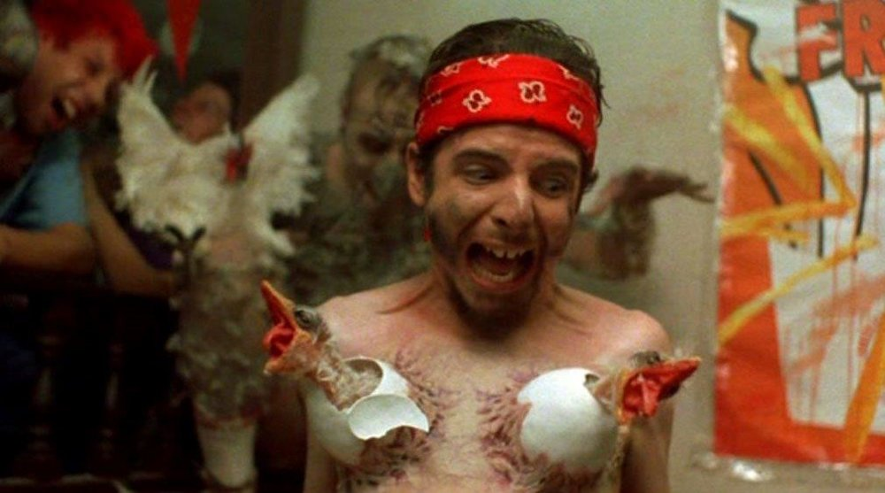

Poultrygeist

Our Rating: 8/10
Overview
Poultrygeist: Night of the Chicken Dead is a 2006 black comedy musical horror film directed by Lloyd Kaufman and co-directed by Gabriel Friedman from a screenplay by Friedman and Daniel Bova. The film was distributed and released on December 26, 2006 and in 2008 on DVD by Troma Entertainment.
Plot
Poultrygeist: Night of the Chicken Dead is a 2006 black comedy musical horror film directed by Lloyd Kaufman and co-directed by Gabriel Friedman from a screenplay by Friedman and Daniel Bova. The film was distributed and released on December 26, 2006 and in 2008 on DVD by Troma Entertainment.
Poultrygeist follows a group of consumers and ordinary citizens who are trapped inside a New Jersey fried chicken fast food restaurant – the American Chicken Bunker – which is being attacked by a chicken-possessed zombie demonic alien spirit because the building is erected on top of a sacred Native American burial ground. The protagonist is Arbie (Jason Yachanin), an ACB employee trying to win back the heart of his ex-girlfriend Wendy (Kate Graham), an activist protesting against the restaurant, who has left Arbie for another woman.
High school sweethearts Arbie and Wendy meet the day before Wendy's departure to college to consummate their relationship in the Tromahawk Indigenous peoples of the Americas burial ground, promising to each other that they will always stay faithful to each other. She is grossed out after finding a man jacking off to their lovemaking, but he's later killed by zombie hands spouting from the ground which tear through his system and out of his mouth, grabbing Arbie's underwear that he was masturbating with.
One college semester later, when Arbie returns to the spot of his one and only sexual encounter, he is shocked to discover two unsettling realities: not only has the burial ground been bulldozed and replaced by an American Chicken Bunker, a mega-conglomerate fast food franchise, but college has turned his dear Wendy into a "leftist, lipstick lesbo liberal", protesting the construction of the building with her activist girlfriend Micki (Allyson Sereboff).
Disillusioned and out for revenge, Arbie decides to get a job at the American Chicken Bunker. Under the supervision of paranoid manager Denny, Arbie is thrust into the monotony of minimum wage with a variety of colorful people: the effeminate Mexican Paco Bell (Khalid Rivera), the animal-loving redneck Carl Jr. (Caleb Emerson), the burqa-clad Muslim Hummus (Rose Ghavami) and a mysterious 60-year-old man in the restaurant's basement who has worked as their costumed mascot all his life and has a virtually identical background to Arbie.
While grinding meat, Paco is pushed into the meat grinder by an uncooked chicken. General Lee Roy decides to let Paco get turned into sloppy jose. Arbie begins to unravel a sinister plot involving the spirits of disenfranchised Native Americans and the billions of slaughtered chickens sent to the "concentration coops" who plan on exacting their revenge in the most gruesome ways possible, after being told so by Paco (who is reanimated as a sloppy jose). Carl Jr, who is having intercourse with an uncooked chicken in the storage room, fights the chicken when it starts biting his penis. Hummus manages to kill it by shoving a broom up Carl's backside, though it tears off his penis. General Lee Roy tells them not to take him to a hospital and to give the chicken (which has been sprayed with blood and green ichor) to the protester outside. Carl Jr. is killed when Arbie gives him alcohol to drink. After Mickie tells the protesters that the chicken tastes good, the protesters go inside the restaurant to eat it. Wendy finds out that Mickie has been paid by General Lee Roy to say that the chicken tastes good; she breaks up with Mickie and returns to Arbie. General Lee Roy gets diarrhea after being force-fed eating a piece of chicken. General Lee Roy lays an egg in the bathroom and is attacked by the chicken that hatches from the egg. He rips off the chicken's head with his teeth and is sprayed with green blood. He becomes a giant egg and hatches into a chicken zombie. He then decapitates Denny (who is telling a story about the first time he encountered a chicken).
The customers, workers, and protesters then all turn into zombie chickens. The mascot (Lloyd Kaufman) shoots all of them with an M-16 machine gun. The General Lee Roy zombie returns, but is shot down by the mascot. As the old man approaches the General, he gets his nose ripped off by a now zombie chicken Denny. Arbie then shoots and kills Denny. Wendy turns the open/closed sign to "closed", which keeps the chicken zombies at bay. The mascot, who is still alive, tells Arbie that he is his future self. He then turns into a chicken zombie. Mickie, who attempts to escape, is turned into a zombie chicken. She and the Mascot chicken zombie chase after Arbie and Wendy. Hummus drinks meat steroid in an attempt to save them and accidentally kills herself in the process. Arbie and Wendy realize that beer kills the chicken zombies and then kill the Mickie and mascot zombie. They run out of beer and are saved by Hummus (who is still alive, despite having exploded a few minutes earlier). They find a child hiding in the storage room and are attacked once again by the General Lee Roy chicken. It is then killed by the Paco sandwich. Hummus is then shown to have C-4 strapped to her body and tells them that she will sacrifice herself. Wendy, Arbie, and the little girl escape as the building explodes. While being driven home in a car, the child experiences stomach cramps after drinking a can of beer and eventually starts clucking like a chicken thus laying an egg, frightening her, Arbie, and Wendy. The guys eventually lose control and crash, resulting in the car back-flipping before landing on the ground and exploding, thus killing all inside. In a post-credits scene, the zombified chickens are shown dancing as a reprise of the Poultrygeist theme song plays.
Cast
- Jason Yachanin as Arbie
- Kate Graham as Wendy
- Allyson Sereboff as Micki
- Robin Watkins as Gen. Lee Roy
- Joshua Olatunde as Denny
- Rose Ghavami as Hummus
- Caleb Emerson as Carl Jr
- Lloyd Kaufman as Old Arbie
- Khalid Rivera as Paco Bell
- Joe Fleishaker as Jared
- Brian Cheverie as Father O'Houlihan
- Ron Jeremy as Crazy Ron
- Debbie Rochon as Actress Hit with Beer.
- Keith White Jr. as Citizen of Tromaville/Chicken Zombie
- Ruth Phelps as Red Lobster